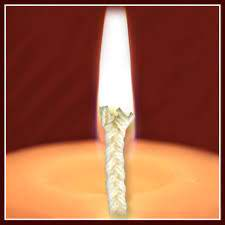
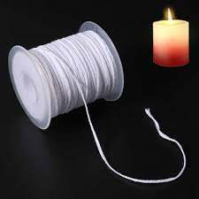
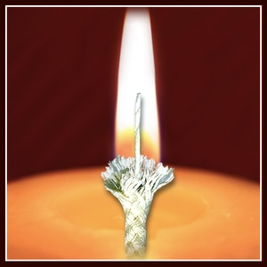
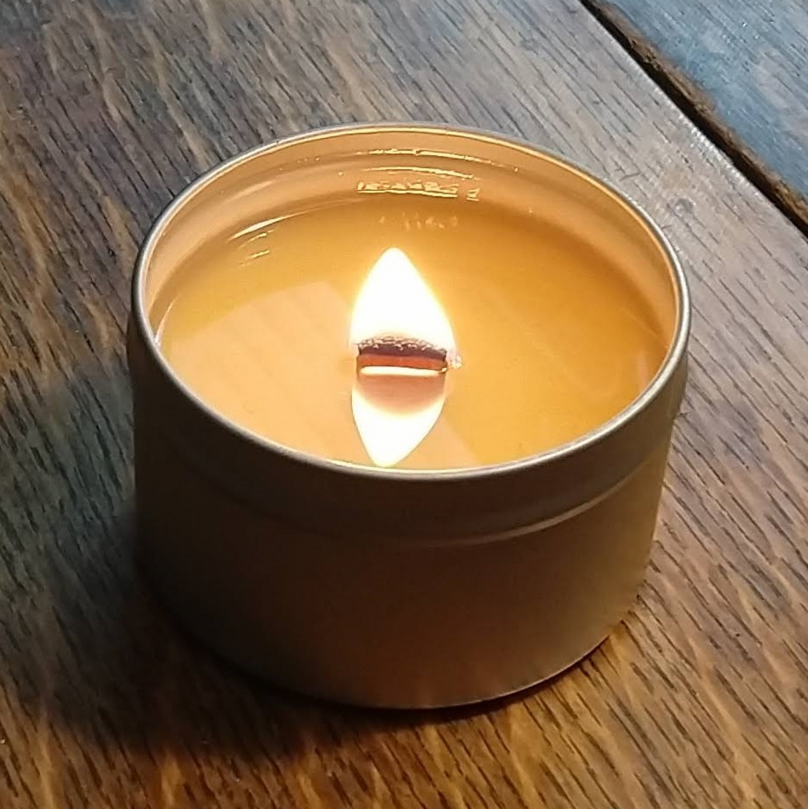

Flat Wicks

These flat-plaited or knitted wicks, usually made from three bundles of fiber, are very consistent in their burning and curl in the flame for a self-trimming effect. They are the most commonly used wicks, and are often found in taper and pillar candles.
Square Wicks

These braided or knitted wicks also curl in the flame, but are more rounded and a bit more robust than flat wicks. They are preferred for beeswax applications and can help inhibit clogging of the wick, which can occur with certain types of wax formulations, pigments or fragrances.
Cored Wicks

These braided or knitted wicks use a core material to keep the wick straight or upright while burning. The wicks have a round cross section, and the use of different core materials provides a range of stiffness effects. The most common core materials for wicks are cotton, paper, zinc or tin. Cored wicks can be found in jar candles, pillars, votives and devotional lights.
Wooden Wicks

Wooden wicks have become popular in recent years for the visual aesthetic they create and the soft crackling sound they create. Wooden wicks are available as single-ply, multi-layered, curved and decorative shaped wicks made from 100% wood, semi-wood, fibrous material or cotton and wood combinations.